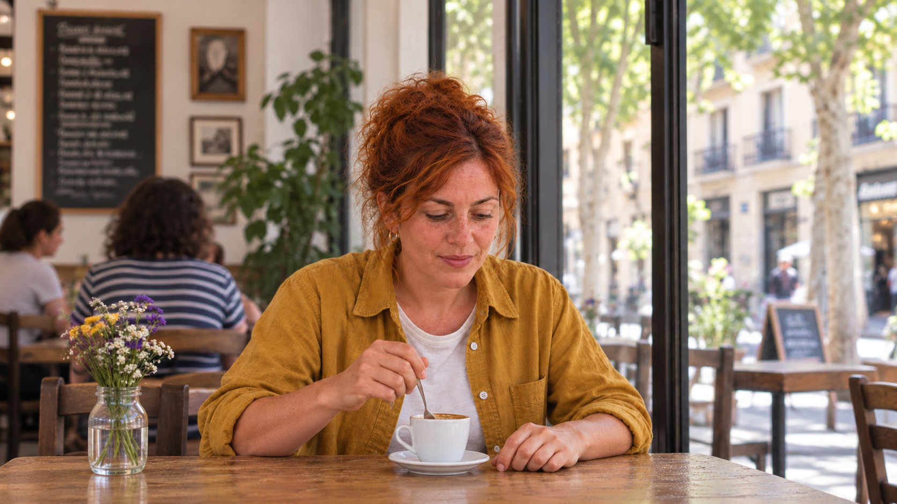
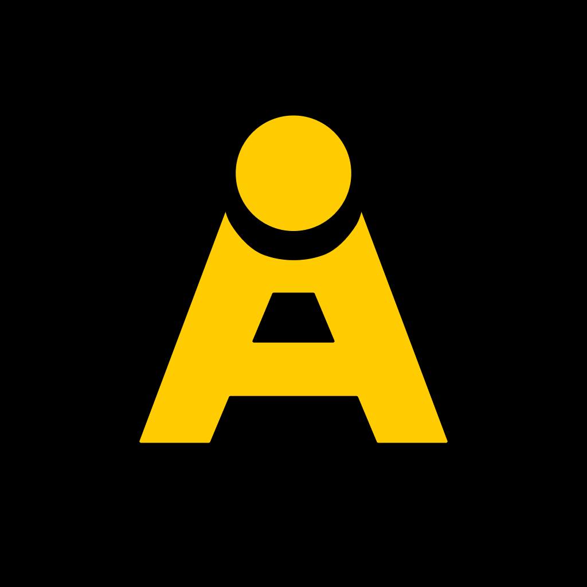
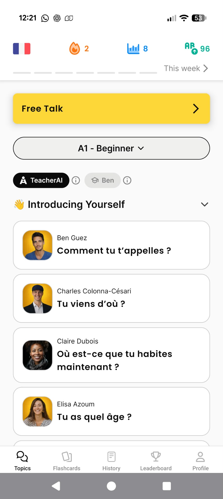
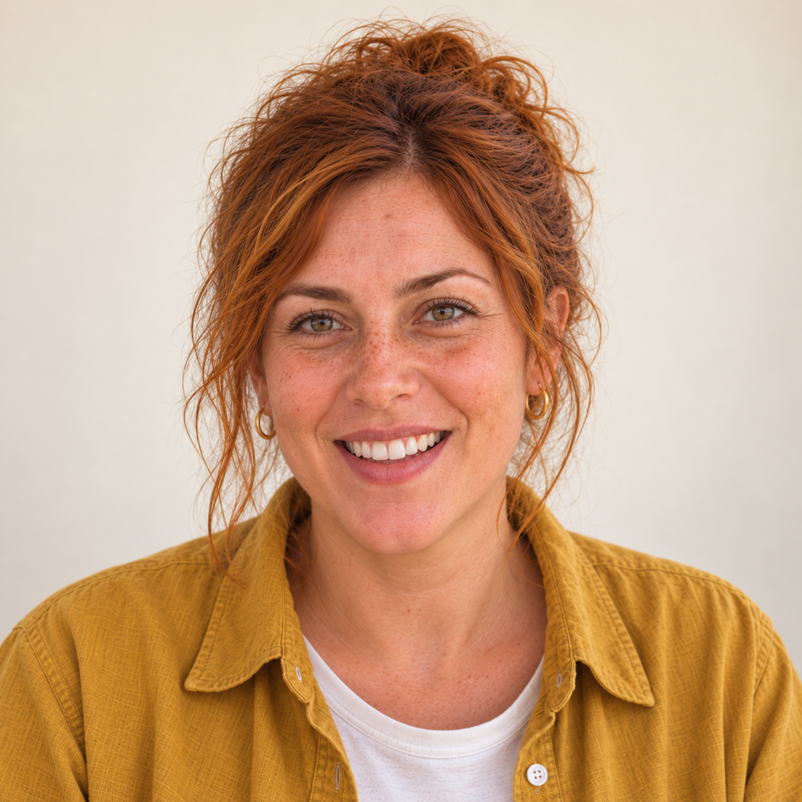
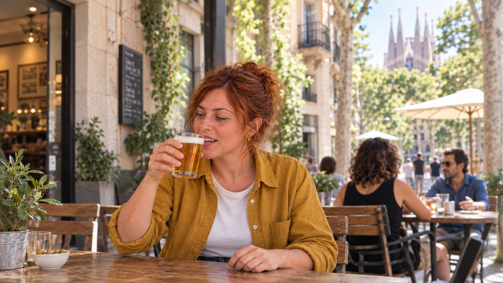
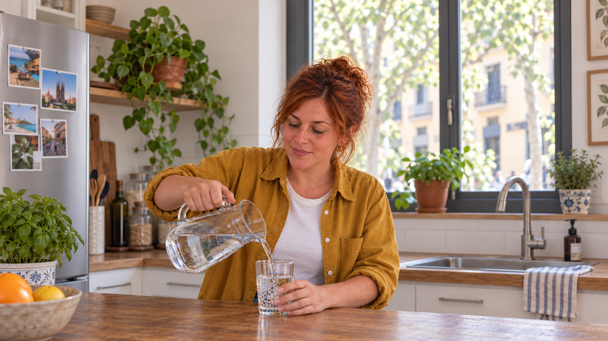

MEET A BRICK

un café
a coffee
Listen, then say it aloud.

Teacher AIBeginner courseDESIGN EXPLORATION · FOR DISCUSSIONA course within Teacher AI
The proposed beginner course, every distinct Lesson 6 card, and entry/return comparisons against two clearly labeled app baselines.
Two baselines, kept separate
Your screenshot is direct evidence of the app on your phone. The Speak screen shows a layout found in the local code; its production availability is unverified. Both are useful references, with different evidence behind them.
Actual app · supplied screenshot
Original screenshot, unchanged. French account context and system bars are retained.

Local source · reconstruction
Simplified HTML with example data. This is not a verified production screen.
How would you like to practice?
Start a new conversation about anything.
Pick a topic and start talking.
The course example is Spanish Lesson 6. This study compares visual continuity; it does not simulate changing the screenshot’s French account to Spanish. Profile and route-chooser screens remain explicitly labeled local-source navigation bridges for either baseline.
How would you like to practice?
Start a new conversation about anything.
Pick a topic and start talking.
Spanish learner
Teacher AI · Preview
Spanish learner
Teacher AI · Preview

a coffee
Listen, then say it aloud.
That’s an easy one. It’s the same word as the English café, and in Spanish it also means the drink. Un café is “a coffee.”
Coffee and café are actually the same word: both go back to Arabic qahwa. The accent mark on the é tells you where the stress goes: ca-FÉ.
LISTEN TO THE SOUNDS
A written accent marks the syllable that carries the stress.
LISTEN TO THE SOUNDS
A written accent marks the syllable that carries the stress.
No written accent? The word ending tells you which syllable to lean on:
Lean on the second-to-last syllable.
Lean on the last syllable.
LISTEN TO THE SOUNDS
Listen for the stress in these words.
“I want a coffee”
Listen, then say it aloud.
Say it aloud, or type your answer.
Say it in Spanish.
¿Quieres un café?|
Your recording ▷
How did you do?
How did you do?
PATTERN
In Spanish, there are two ways to say “a”:
Un café is “a coffee”; una cerveza is “a beer.”
PATTERN
In Spanish, there are two ways to say “a”:
Both un and una mean “a.” Which one you use depends on the noun, so we learn the two words together as one brick.
LISTEN TO THE SOUNDS
In most of Spain, z sounds like the th in think.
The letter c makes the same sound when it comes before e or i, and you can hear both in cerveza.
In Latin America and parts of southern Spain, both sound like s instead.
LISTEN TO THE SOUNDS

Show translation
Do you want a beer?
¡Sí, quiero una cerveza!
¡No, quiero un café!
Listen, then choose the meaning.
Which word did you hear?
Which word did you hear?
Choose the English meaning.
Tap the words in order
Tap the words in order
Ask Inés if she wants to speak Spanish.
Ask Inés if she wants to speak Spanish.
¿Quieres hablar español?
Ask Inés if she wants to speak Spanish.
¿Quieres hablar español?
Say yes to Inés. You can add what you want to speak or learn.
Show translation
Wrong guesses are free and they prime the brain to learn the answer better.
WHY THIS WORKS
Kornell, Hays & Bjork had people guess answers they couldn't know, then corrected them. The failed guesses IMPROVED later learning versus just studying, a result still being confirmed in 2025. Your wrong guesses here are doing productive work.
Slamecka & Graf (1978); Kornell, Hays & Bjork (2009); Journal of Cognition replication (2025)
✓ Lesson 6 complete
At the bar · You can order a drink in Spanish.
From this lesson


Spanish learner
Teacher AI · Preview
How would you like to practice?
Start a new conversation about anything.
Pick a topic and start talking.
Source-based mockups · Example learner data · Audio and recording inactive
Same course, two treatments
Both versions keep the same layout, content, teacher imagery and yellow actions. The alternative brings the canvas and text back to the current TAI palette.
Recommended · A
Say it aloud, or type your answer.
Wrong guesses are free and they prime the brain to learn the answer better.
The lightly warm canvas, charcoal text and Warm Pearl break create a quieter course. This asks for a little more separation from the current app.
Alternative · Brand-close
Say it aloud, or type your answer.
Wrong guesses are free and they prime the brain to learn the answer better.
The current neutral canvas and black/gray text stay. Violet and a neutral Pearl are added only for teaching. It is closer to today’s app, but less warm.
Brand-close is an extended palette proposal, not a screenshot of the current course. It still adds two teaching fills. Neither option changes the rest of the app in this presentation.
A focused decision
The beginner course can have a distinctive learning environment while remaining recognizably Teacher AI. It does not need to settle the conversation redesign first.
The app outside the course. TAI yellow. Existing typefaces, people, imagery and core learning actions. The two app baselines remain separate; the installed entry route still needs verification.
Outlined white practice surfaces, violet explanations and Pearl reading breaks. Consistent spacing and controls, with activity types that feel different.
Does the sequence feel clear, coherent and recognizably TAI? Does A give the course enough warmth, or is the brand-close treatment the better starting point?
“I’d like to show you a direction for the beginner course as a complete learning experience, including how people enter and leave it. The rest of the app stays as it is. There’s also a version closer to the current palette. Let’s judge the course on clarity, variety and continuity before deciding anything about a wider redesign.”
Exploration only. One mockup per distinct Lesson 6 activity family, plus typing/reveal/feedback and staged explanations. This is a card-type tour, not all 23 question instances in their exact order. The deterministic Lesson 6 inventory covers five seeds; Quick check variants are seed-dependent. Method, echo, meaning-to-word, culture, milestone, level-up and learner check-in are outside this sampled Lesson 6 tour, rather than silently inserted.
The Topics baseline is your unchanged supplied screenshot, including system bars and French context. Speak, Profile and the route chooser are local-source HTML reconstructions with example data. Their release availability and the installed app’s course-entry path are unverified. Path, lesson selection and path-to-Profile navigation are condensed. The prototype does not claim a direct completion-to-Speak route. The course sample is Spanish, not a simulation of your French account.
Course mockups reuse prior studies, current local component anatomy and original course assets. The z/c example wording is grounded in the saved October 18 native walkthrough capture, which differs from the raw local course fixture. The two-stage science explanation and source/sample answer paths are shown. Audio, recording, grading, research links and learner-progress services are inactive. Fades are presentation navigation only.
No app source, course data, real review comments or live learner state was changed. No wider redesign is being approved here.